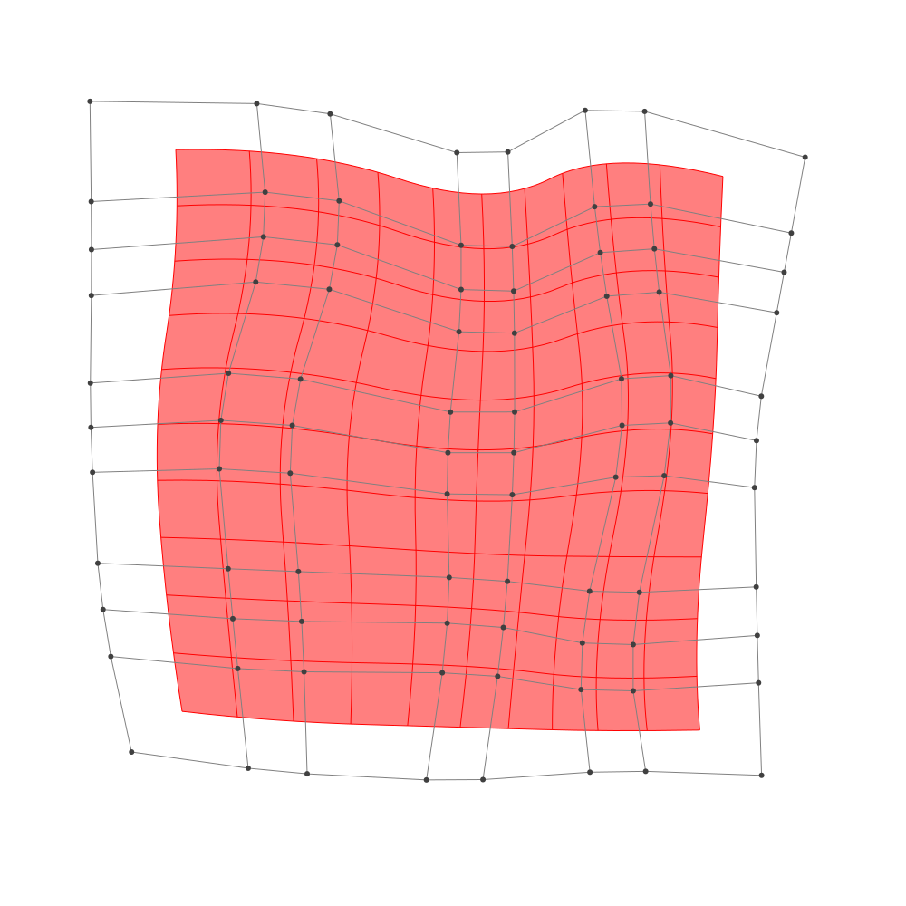

Refinement
BasicBSpline.refinement — FunctionRefinement of B-spline manifold with given B-spline spaces.
julia> p = 2 # degree of polynomial2julia> k = KnotVector(1:8) # knot vectorKnotVector([1.0, 2.0, 3.0, 4.0, 5.0, 6.0, 7.0, 8.0])julia> P = BSplineSpace{p}(k) # B-spline spaceBSplineSpace{2, Float64}(KnotVector([1.0, 2.0, 3.0, 4.0, 5.0, 6.0, 7.0, 8.0]))julia> rand_a = [SVector(rand(), rand()) for i in 1:dim(P), j in 1:dim(P)]5×5 Matrix{StaticArrays.SVector{2, Float64}}: [0.759488, 0.723024] [0.244464, 0.808716] … [0.0359951, 0.957251] [0.604307, 0.419901] [0.431126, 0.643333] [0.738127, 0.822333] [0.42195, 0.276098] [0.876475, 0.670023] [0.875018, 0.22707] [0.388238, 0.569849] [0.0611524, 0.280255] [0.113134, 0.93187] [0.229376, 0.404089] [0.215165, 0.512474] [0.933445, 0.0337545]julia> a = [SVector(2*i-6.5, 2*j-6.5) for i in 1:dim(P), j in 1:dim(P)] + rand_a # random5×5 Matrix{StaticArrays.SVector{2, Float64}}: [-3.74051, -3.77698] [-4.25554, -1.69128] … [-4.464, 4.45725] [-1.89569, -4.0801] [-2.06887, -1.85667] [-1.76187, 4.32233] [-0.0780502, -4.2239] [0.376475, -1.82998] [0.375018, 3.72707] [1.88824, -3.93015] [1.56115, -2.21974] [1.61313, 4.43187] [3.72938, -4.09591] [3.71517, -1.98753] [4.43345, 3.53375]julia> M = BSplineManifold(a,(P,P)) # Define B-spline manifoldBSplineManifold{2, (2, 2), StaticArrays.SVector{2, Float64}, Tuple{BSplineSpace{2, Float64}, BSplineSpace{2, Float64}}}((BSplineSpace{2, Float64}(KnotVector([1.0, 2.0, 3.0, 4.0, 5.0, 6.0, 7.0, 8.0])), BSplineSpace{2, Float64}(KnotVector([1.0, 2.0, 3.0, 4.0, 5.0, 6.0, 7.0, 8.0]))), StaticArrays.SVector{2, Float64}[[-3.7405121654404843, -3.7769759626712007] [-4.255536482366937, -1.6912840932986137] … [-4.476578707679571, 2.1796327766757706] [-4.464004884031882, 4.457251420187038]; [-1.8956931025874808, -4.08009923453564] [-2.0688735337024062, -1.8566665582509552] … [-1.5369764097179384, 2.432917113552703] [-1.7618725486798645, 4.322332699870293]; … ; [1.8882375039923738, -3.930150936065683] [1.56115237685903, -2.219744577108477] … [1.850661014612354, 2.2937190373795415] [1.6131337972958728, 4.431869539873983]; [3.7293758174774703, -4.095910524437579] [3.715165472663017, -1.9875258039413897] … [4.018942469007127, 1.9519065825273407] [4.433445060628248, 3.5337544881599112]])
h-refinemnet
Insert additional knots to knot vector.
julia> k₊=(KnotVector(3.3,4.2),KnotVector(3.8,3.2,5.3)) # additional knotvectors(KnotVector([3.3, 4.2]), KnotVector([3.2, 3.8, 5.3]))julia> M_h = refinement(M,k₊=k₊) # refinement of B-spline manifoldBSplineManifold{2, (2, 2), StaticArrays.SVector{2, Float64}, Tuple{BSplineSpace{2, Float64}, BSplineSpace{2, Float64}}}((BSplineSpace{2, Float64}(KnotVector([1.0, 2.0, 3.0, 3.3, 4.0, 4.2, 5.0, 6.0, 7.0, 8.0])), BSplineSpace{2, Float64}(KnotVector([1.0, 2.0, 3.0, 3.2, 3.8, 4.0, 5.0, 5.3, 6.0, 7.0, 8.0]))), StaticArrays.SVector{2, Float64}[[-3.7405121654404843, -3.7769759626712007] [-4.049526755596355, -2.525560841047648] … [-4.474692634132418, 2.5212755732024608] [-4.464004884031882, 4.457251420187038]; [-2.5413797745860323, -3.974006089383087] [-2.717075249275408, -2.668872053063816] … [-2.5871044618117947, 2.648060594096083] [-2.7076188660530707, 4.369554251981153]; … ; [1.8882375039923738, -3.930150936065683] [1.6919864277123675, -2.9039071206913594] … [1.8150319320148818, 2.6144416127537076] [1.6131337972958728, 4.431869539873983]; [3.7293758174774703, -4.095910524437579] [3.7208496105887985, -2.830879692139865] … [4.081117857750296, 2.189183768372226] [4.433445060628248, 3.5337544881599112]])julia> save_png("2dim_h-refinement.png", M_h) # save image
Note that this shape and the last shape are identical.
p-refinemnet
Increase the polynomial degree of B-spline manifold.
julia> p₊=(1,2) # additional degrees(1, 2)julia> M_p = refinement(M,p₊=p₊) # refinement of B-spline manifoldBSplineManifold{2, (3, 4), StaticArrays.SVector{2, Float64}, Tuple{BSplineSpace{3, Float64}, BSplineSpace{4, Float64}}}((BSplineSpace{3, Float64}(KnotVector([1.0, 2.0, 3.0, 3.0, 4.0, 4.0, 5.0, 5.0, 6.0, 6.0, 7.0, 8.0])), BSplineSpace{4, Float64}(KnotVector([1.0, 2.0, 3.0, 3.0, 3.0, 4.0, 4.0, 4.0, 5.0, 5.0, 5.0, 6.0, 6.0, 6.0, 7.0, 8.0]))), StaticArrays.SVector{2, Float64}[[-3.5475549056211193, -3.300334340350791] [-3.776580073600048, -2.2460100050884884] … [-3.9933961172161108, 2.7750763663166733] [-4.006898368943067, 3.8815354333061673]; [-2.2607015494171945, -3.479459720441734] [-2.3757787554589496, -2.3792217828753985] … [-2.0732395790099583, 2.8792320813690147] [-2.16589848494012, 3.8562901292939498]; … ; [2.1263590570531754, -3.5135935126575744] [1.9888893920130766, -2.625225469717388] … [2.1798273613880963, 2.74810864565854] [2.1153995701413226, 3.7708253471672717]; [3.405930396429722, -3.5577701779823414] [3.3727523254959193, -2.536742681195827] … [3.734019965807546, 2.427516576280095] [3.886935444206639, 3.2647990788348697]])julia> save_png("2dim_p-refinement.png", M_p) # save image

Note that this shape and the last shape are identical.